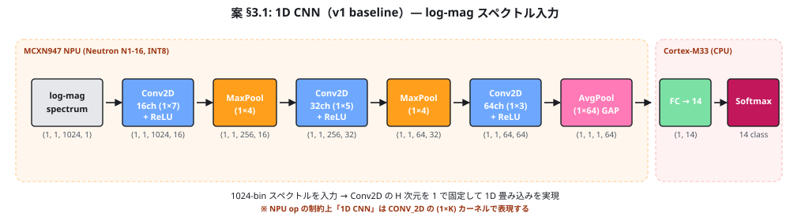
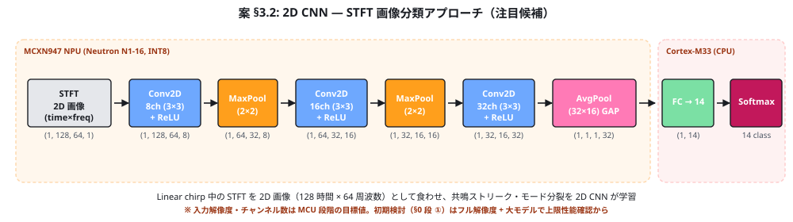
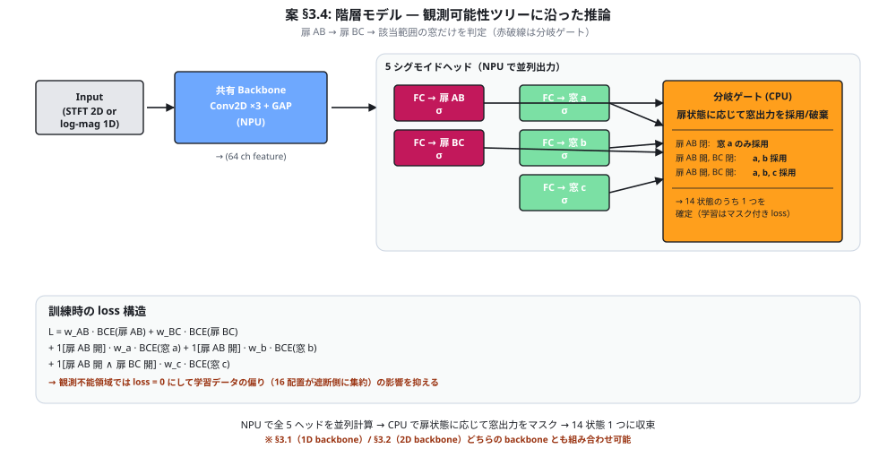
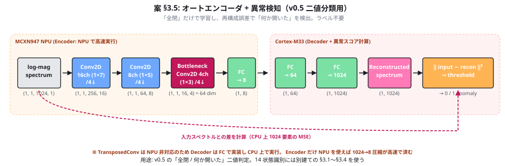
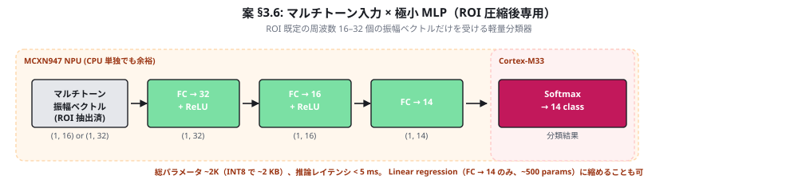
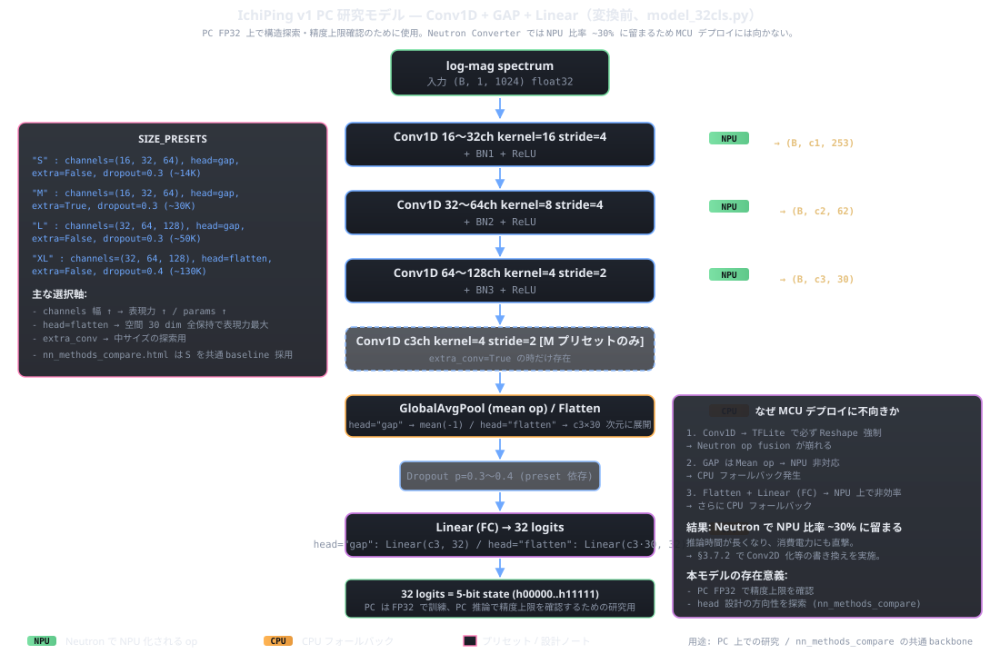

0. 開発順序の原則 — PC フルスペック先行、MCU 制約適合は後
画像解像度を下げる、入力 bin 数を減らす、層数を減らす、INT8 で訓練する ― これらの最適化は 「PC 上で 14 状態が判別可能と確認できた後」でしか手を出さない。 逆順にやると、性能が出なかったときに 「制約のせいか / モデルのせいか / 入力のせいか / 走査音のせいか」が 分離できなくなる。
| 段 | 環境 | モデル | 入力 | 判定基準 |
|---|---|---|---|---|
| ① 上限性能の確認 | PC（GPU 可） | 制約なしの フルスペック（大きめ 2D CNN・FP32） | フル解像度 STFT（例 512×128）、フル bin 数 | 14 状態 macro-F1 ≥ 0.95 が出るか |
| ② 軽量化下限の探索 | PC（GPU/CPU） | 段階的に層・チャンネル・解像度を削減 | 削減版 STFT（128×32 など） | F1 が ① から何 pt 落ちるか |
| ③ INT8 量子化 | PC（CPU シミュレータ） | ②のモデルを INT8 で QAT or PTQ | 同上 | FP32 比 -2 pt 以内 |
| ④ MCU デプロイ | MCXN947 NPU | ③の INT8 を eIQ Toolkit で変換 | 同上 | レイテンシ・メモリの実測が制約内 |
①で性能が出なかった場合はモデル設計や入力表現の問題ではなく、走査音 or データ収集 or 物理セットアップに 根本問題がある可能性が高いので、走査音考察 §4.0 の Day 0 サニティチェックに戻る。
②〜④で性能が落ちすぎた場合は PC 推論への退避は選ばない。 IchiPing の目標は MCXN947 上でのエッジ推論であり、ここを諦めるとプロジェクトの存在意義 （「1 個のセンサ × 1 発の Ping をエッジ AI で閉じる」）が崩れる。 代わりに、入力表現・モデル設計・走査音のいずれかに立ち返り、 「MCU INT8 で動く規模での 14 状態識別」を成立させる方向で再設計する。
1. 設計上の制約（変えにくいもの）
1.1 全体制約
| 制約 | 値 | 由来 |
|---|---|---|
| MCU | FRDM-MCXN947 | spec §6 固定 |
| NPU | eIQ Neutron N1-16（4 compute pipe × 4 INT8 MAC = 16 MAC） | MCXN94x 内蔵 |
| NPU 演算精度 | INT8 専用（FP16/FP32 は不可） | Neutron N1-16 仕様 |
| NPU スループット | ~4.8 GOPS @ 150 MHz | = 150 MHz × 4 × 4 × 2 |
| NPU 高速化倍率 | CPU 比 最大 40–42× | NXP 公称値 |
| フラッシュ | 2 MB 中、モデル領域は ≤ 64 KB を目安 | ファーム・LVGL・データバッファと共存 |
| RAM | 512 KB 中、推論ワーキング ≤ 96 KB | SAI DMA バッファ・PC 通信バッファと共存 |
| レイテンシ | 1 推論あたり ≤ 100 ms（Ping 後） | UX 上、Ping → 結果表示が 1 s 以内に収まる前提 |
| 入力サンプリング | 16 kHz, 24-bit | INMP441 + SAI |
1.2 NPU でサポートされる TFLite Operator（最重要）
| カテゴリ | OP | NPU 対応 | 用途・備考 |
|---|---|---|---|
| 畳み込み | CONV_2D |
✅ | 2D 畳み込み（HW=1×K で 1D conv も実現可） |
DEPTHWISE_CONV_2D |
✅ | MobileNet 系で多用、パラメータ削減に有効 | |
| 全結合 | FULLY_CONNECTED |
✅ | 分類ヘッドの Dense 層 |
| プーリング | AVERAGE_POOL_2D |
✅ | Global Average Pool は AVG_POOL_2D で入力サイズ＝カーネルサイズにして実現 |
MAX_POOL_2D |
✅ | ダウンサンプリング | |
| テンソル整形 | PAD |
✅ | 境界パディング |
RESHAPE |
✅ | 次元組み替え | |
SLICE |
✅ | テンソル切り出し | |
| 要素演算 | ADD |
✅ | 残差接続（ResNet 系）が使える |
| サポート外 （CPU 実行） |
SOFTMAX |
❌ | 分類最終層。Cortex-M33 上で実行。これは問題ない（最後の数値 14 要素だけなので無視できる負荷） |
CONCATENATION |
❌ | Inception/U-Net 系の特徴マップ結合が使えない。アーキテクチャ設計の制約 | |
BATCH_NORMALIZATION |
❌（変換時に CONV へ畳み込む） | 標準的に Conv 重みに事前畳み込む（fold）→ NPU で動作可。PyTorch/TF どちらも変換時に自動 fold | |
TRANSPOSE など |
❌ | 事前に NHWC レイアウトで設計しておけば不要 |
1.3 活性化関数
- NPU ハードウェアは ReLU / Swish / Mish の非線形を高速適用可能（dedicated activation engine）
- ただし TFLite Micro 経由のソフトウェア対応は限定的なので、まずは ReLU（CONV_2D に fused）を採用するのが最も確実
- Leaky ReLU や GELU は CPU フォールバックされる可能性が高い — 避ける
1.4 量子化
- PTQ（Per-Tensor Quantization, 非対称 8-bit）: モデル全体に 1 つの scale/zero-point。実装最簡
- PCQ（Per-Channel Quantization, 対称 8-bit）: チャンネル毎に scale。精度劣化が少ない、推奨
- QAT（量子化を意識した学習）が PTQ より精度を出しやすい。PyTorch FX Graph Mode Quantization または TFLite QAT で実施
1.5 設計上のチェックリスト（モデル作成前に必ず通す）
- 使う op が 1.2 の ✅ リストに収まっているか
- 1D 信号を扱う場合は Conv2D の片次元を 1 にして表現できているか（純粋な 1D conv op はない）
- Concatenation を使っていないか — もし使うなら ADD の残差接続に置換できないか検討
- Softmax 以外の非線形が ReLU のみで構成されているか
- BatchNorm は学習時に使い、変換時に fold されることを確認
- 入力テンソルが HWC レイアウト（NHWC）で組まれているか
- モデル変換は eIQ Toolkit の Neutron Converter Tool を通すこと（標準 TFLite だけでは NPU 化されない）
詳細は eIQ TensorFlow Lite User's Guide（MCUXpresso SDK の
middleware/eiq/doc/ 配下）と
AN14700 i.MX RT700 eIQ Neutron NPU Enablement and Performance
を参照（RT700 と MCX N は同じ N1-16 NPU を共有）。
1.A ONNX → MCXN947 NPU 変換パイプライン（実装着手前に確認）
1.A.1 パイプライン全体図
PyTorch (.pt, FP32)
│ torch.onnx.export(opset=13, batch=1)
▼
ONNX (.onnx, FP32 or QDQ 量子化済)
│ NXP eiq-onnx2tflite（pip install eiq-onnx2tflite）
│ - NCHW → NHWC 自動変換
│ - BatchNorm を Conv に fold
│ - INT64 → INT32 自動キャスト
│ - INT8 量子化（PTQ or PCQ）
▼
TFLite (.tflite, INT8 quantized)
│ eIQ Toolkit の Neutron Converter Tool
│ eiq-converter --plugin eiq-converter-neutron
│ --custom-options "target mcxn94x"
│ input.tflite output_neutron.tflite
│ - サポート op を NeutronGraph 単一 op にまとめる
│ - サポート外 op は CPU フォールバック扱いで残す
▼
Neutron 化 TFLite (.tflite, NPU 用にラップ済)
│ MCUXpresso SDK の middleware/eiq/tensorflow-lite に同梱
│ - TFLite Micro ランタイム + Neutron NPU プラグイン
│ - モデルを const uint8_t[] としてフラッシュに焼く
▼
MCXN947 上で推論実行（NPU + Cortex-M33 ハイブリッド）
1.A.2 主要ツール
| ツール | 役割 | 入手先 | 備考 |
|---|---|---|---|
torch.onnx.export |
PyTorch モデルを ONNX 形式にエクスポート | PyTorch 標準 | opset 13 を推奨。batch=1 の固定形状でエクスポート。do_constant_folding=True |
eiq-onnx2tflite |
ONNX → TFLite 変換、INT8 量子化 | NXP/eiq-onnx2tflitepip install --index-url https://eiq.nxp.com/repository/ eiq-onnx2tflite |
NCHW→NHWC・BatchNorm fold・INT64→INT32 を自動処理。--per-channel で PCQ 量子化 |
| eIQ Toolkit (Neutron Converter Tool 同梱) |
TFLite → Neutron NPU 化 TFLite | NXP 公式（無料、要アカウント登録） | 「Neutron Converter Tool」が中核。eIQ Toolkit の CLI 環境から実行（標準コマンドプロンプトでは環境変数が不足） |
| MCUXpresso SDK | TFLite Micro ランタイム + Neutron NPU プラグイン | NXP 公式 | middleware/eiq/tensorflow-lite/ 配下。サンプルプロジェクト多数 |
1.A.3 PyTorch 側エクスポート時の注意
- opset_version: 13 推奨（11〜13 で動作実績）。新しすぎる opset は eiq-onnx2tflite が未対応の可能性
- 入力形状を固定:
dynamic_axesは使わない。バッチ次元も 1 固定（推論時の単発推論前提） - BatchNorm: 学習時に使ってよい。エクスポート時に
model.eval()しておけば Conv に fold される。eiq-onnx2tflite 側でも fold する - 活性化関数は ReLU のみに統一（§1.3 参照）。 GELU / Swish / Mish などは CPU フォールバックされる可能性
- Conv2D だけを使う（1D 信号は
(1, K)カーネルで表現、§1.2） - Concatenate を使わない: §1.2 の NPU 非対応 op 表参照。代わりに ADD で残差接続
- Reshape は最小限:
SLICE/RESHAPEは使えるが多用は避ける（NPU 化失敗のリスク） - 正則化レイヤは Dropout のみ: 学習時のみ、eval 時は除外される。NPU 化には影響しない
1.A.4 量子化の手順
| 方式 | 実施場所 | 長所 | 短所 |
|---|---|---|---|
| PTQ (Post-Training Quantization) | ONNX エクスポート後、eiq-onnx2tflite で実施 | 追加学習不要、高速 | FP32 比 -3〜-5 pt の精度劣化があることも |
| QAT (Quantization-Aware Training) | PyTorch で fake-quant モジュール挿入して再学習 → ONNX QDQ エクスポート | FP32 比 -1〜-2 pt 以内に収まりやすい | 学習パイプラインの改修が要る |
IchiPing では §0 開発原則 段 ③ で「FP32 比 -2 pt 以内」を目標にしているので、 まず PTQ を試して精度落ちが許容範囲なら採用、足りなければ QAT に進む段階的アプローチが筋。
1.A.5 Neutron Converter Tool の使い方
# eIQ Toolkit インストール後、Toolkit 同梱の CLI 環境を開いて実行
# （標準 Windows cmd だと PATH 環境変数が足りずエラーになる）
eiq-converter --plugin eiq-converter-neutron \
--custom-options "target mcxn94x" \
input_quantized.tflite \
output_neutron.tflite
変換後の .tflite は NeutronGraph という単一のカスタム op に NPU 対応部分が
集約される。CPU フォールバックが必要な op（Softmax など）は元の op として残る。
生成された TFLite を xxd -i で C 配列化してフラッシュに焼くのが標準。
1.A.6 ExecuTorch (将来オプション、現状は不可)
PyTorch が公式に進めている ExecuTorch NXP backend は ONNX を経由しない PyTorch → LiteRT → Neutron 直接パイプラインを目指しているが、 2026 年現在は "Prototype Quality"で i.MX RT700 (N3-64 NPU) のみ正式サポート。 MCXN947 (N1-16) は未対応のため 本プロジェクトでは §1.A.1 の ONNX 経由パイプラインを採用する。 将来 ExecuTorch が MCXN947 対応したら乗り換えを検討。
1.A.7 デプロイ前の検証ステップ
- ONNX → TFLite 変換後: TFLite Interpreter (PC で実行) で同じ入力に対して PyTorch FP32 と 出力を比較。許容差以内なら OK
- INT8 量子化後: 量子化前後で 14 状態 F1 を測定。FP32 比 -2 pt 以内が目標
- Neutron 化後: NeutronGraph に乗らなかった op がないかログで確認。 すべてが NPU 化された理想形なら NeutronGraph 単一 op + 入出力テンソル整形だけになる
- MCXN947 実機ベンチ:
middleware/eiq/tensorflow-lite/examplesの サンプルを参考に推論時間・メモリ使用量を実測。目標値（§1.1）に収まるか確認
2. 入力表現の候補
2.1 候補一覧
| 方式 | 次元 | 長所 | 短所 |
|---|---|---|---|
| 生 PCM 波形 | ~16 K サンプル | 情報損失なし、位相情報も保持 | 入力が長く 1D CNN の受容野が大きく要る、INT8 量子化との相性悪 |
| STFT 2D 画像（chirp 中の時間-周波数応答） | ~128 × ~64 = 8 K | Linear chirp の掃引中の応答が時間軸に展開される。共鳴は垂直ストリーク、モード分裂は並走ストリームとして直接可視化。2D CNN（画像分類モデル）が使える | NPU 上の 2D conv は 1D より重い。INT8 量子化との相性は要検証 |
| log-mag スペクトル（現在の選択） | 1024 bin | PowerQuad FFT 1 発で済む、1D CNN との相性最良、解釈しやすい | 位相情報を捨てている、時間構造が失われる |
| 整合フィルタ後の RIR | ~2048 タップ | 線形応答だけが残り、Ping 形状非依存になる | 抽出に逆フィルタ計算が要る（PowerQuad で可能） |
| Mel スペクトル | ~64 bin | 次元削減、人耳特性に整合（人にとっての聞こえやすさには関係するが本タスクには不要かも） | 低域の解像度が落ちる — 扉 AB 判別の手がかりを失う恐れ |
2.2 現在の選択と再考の余地
v1 NN 設計 は 1024-bin log-mag スペクトルを採用。これは ESS や chirp など任意の Ping に対して安定で、PowerQuad FFT 1 発で計算できる利点が大きい。 ただし以下のときは見直し対象:
- RIR の過渡部（最初の数百タップ）に判別性が強く出るなら、整合フィルタ後の RIR を直接食わせる方が筋がいい
- 位相情報が決定的に効くと判明したら、複素スペクトルを実部・虚部 2 チャンネルで入れる選択肢
3. アーキテクチャ候補
3.0 走査音タイプ × NN アーキテクチャの対応関係（最初に見る）
| 走査音タイプ | NN 入力 | 入力次元 | 推奨アーキテクチャ | パラメータ目安 | レイテンシ目安 |
|---|---|---|---|---|---|
| Linear chirp（フル） | STFT 2D 画像 | 128 × 64 | 2D CNN（§3.2） | ~20 K | ~30 ms |
| Linear chirp（フル） | 1D log-mag スペクトル | 1024 | 1D CNN（§3.1） | ~30 K | ~20 ms |
| ホワイトノイズ（フル） | 時間平均 |H(f)|² 1D （励振が定常確率なので時間軸に情報なし） |
1024 | 1D CNN（§3.1） | ~30 K | ~20 ms |
| ESS + Farina | RIR タイムドメイン | 2048 | 1D CNN（§3.1 派生） | ~30 K | ~30 ms |
| ゲート式バーストスイープ | 周波数別 RMS ベクトル | ~110 | 小 MLP（§3.6 派生） | ~3 K | < 10 ms |
| マルチトーン（ROI 圧縮後） | 振幅・位相ベクトル | 16–32 | 極小 MLP（§3.6） | ~100–2 K | < 5 ms |
走査音考察 §4 の推奨戦略「共鳴探索 → マルチトーン圧縮」は、 NN を §3.2（2D CNN）→ §3.6（極小 MLP）に乗り換えることに対応する。 ROI 抽出により入力次元が 2 桁落ち、それに見合った軽量モデルが使える。 「同じ NN を別の走査音に使い回す」発想は捨て、走査音側で 判別性の高い特徴量を事前抽出した 分だけモデル側を縮めるのが筋。
3.1 1D CNN（log-mag スペクトル入力、v1 baseline）

- 共有 backbone（Conv2D 16/32/64 ch、H 次元 = 1 で 1D 畳み込みを実現）+ Global Avg Pool + FC ヘッド
- パラメータ 数万、INT8 で数 10 KB
- PowerQuad FFT + NPU の組合せ最適化が効く
- 注意: 純粋な「1D conv op」は Neutron NPU にないので CONV_2D の (1×K) カーネルで表現
3.2 2D CNN — STFT 画像分類アプローチ（注目候補）

走査音考察 §4.2 で議論した「Linear chirp 中の STFT 2D 画像を そのまま画像分類モデルに食わせる」方向。共鳴探索フェーズで得た 2D 画像を、 小型 2D CNN（SqueezeNet/MobileNet 系の縮小版、または独自設計）で 14 状態に分類する。
- 長所: 時間-周波数両方向の局所性を 2D CNN が学習できる。Linear chirp の掃引で 時間軸に展開された応答は 2D 画像として「眼で見ても何が起きているか分かる」ため、 モデルの判別根拠も解釈しやすい。画像処理コミュニティの転移学習・data augmentation 手法（時間軸シフト、周波数軸マスクなど SpecAugment 系）が転用可能
- 短所: パラメータが 1D 系より 1 桁多くなりがち、MCXN947 NPU の 2D conv 演算は重め、 モデルサイズと推論レイテンシが制約を超える恐れあり
- サイズ目標は MCU 段階の話: 入力 128×64（時間×周波数）程度に落とせれば、 Conv2D 8/16/32 ch + GAP + FC 14 で ~20K パラメータに収まる試算。INT8 で ~20 KB。 ただしこれは §0 の段 ② 以降の最適化目標であり、 初期検討（段 ①）ではフル解像度 STFT（例 512×128）+ 大きめモデルで上限性能を先に確認する
- 判断: 共鳴探索フェーズの 2D 画像を見たうえで、 「1D に縮約しても情報が残る」なら §3.1 系統 A、「2D で見ないと判別不能な時間構造」なら こちらの系統 B に振る
3.3 1D + 2D 並走比較（推奨進め方）
v0.6 の段階で 2 系統の NN を並走で訓練・評価する:
- 系統 A: マルチトーン Ping → 1D log-mag → 1D CNN（§3.1）
- 系統 B: Linear chirp → STFT 2D 画像 → 2D CNN（§3.2）
14 状態 macro-F1・推論レイテンシ・モデルサイズの 3 軸で比較し、MCXN947 NPU 制約下で 良い結果を出した方を v1 に採用。
3.4 階層モデル（観測可能性ツリーに沿った構造）

実効状態数が 2 + 4 + 8 = 14 という観測可能性ツリーに合わせて、 「扉 AB を先に判定 → 扉 BC を判定 → 該当する範囲の窓だけを分類」する ツリー構造の推論器を組む案。§3.1 / §3.2 のどちらの backbone とも組合せ可能。
- 長所: 各段の負荷が軽く、扉誤判定の悪影響を「窓の取り違え」レベルに留められる。インタプリ性も高い
- 長所: 訓練データの偏り（扉閉 16 配置 vs 全開 8 配置）に対しても、各分岐内では均等にできる
- 短所: ステージ間の誤差伝搬。第 1 段で扉 AB を誤ると後段が全滅
- 実装: 単一 NN で「ヘッド優先度」を持たせる方法（loss 重み付け）でも擬似的に実現可能
3.5 オートエンコーダ系

3.5.a 単一 AE（全閉学習 + 異常検知）
状態ラベルなしで「全閉」のスペクトルだけを学習し、再構成誤差で「何か開いた」を検知する案。 spec.html §3 に既出。
- 長所: ラベル不要、未知状態への異常検知が効く
- 短所: 何が開いたか（5 ビット）は当てられない、二値検知止まり
- 用途: v0.5 の「二値分類」相当に
3.5.b 並列 AE 3 本（窓 a / b / c の独立二値判定）
単一 AE では「何が開いたか」が当てられない弱点を補う案。各 AE は対応する窓が 開いている あらゆる観測可能パターンを学習し、その分布から外れた入力を「異常 = その窓は開いていない」と判定する。 3 本を並列に走らせれば、a/b/c それぞれの開閉が独立に得られる。
| AE | 学習データ（その窓が開いている観測可能パターンすべて） | 判定 |
|---|---|---|
| AE_a | 窓 a 開 × (窓 b 任意) × (窓 c 任意) × (扉 AB 任意) × (扉 BC 任意) のうち 観測可能な全構成 | err_a 低 ⇒ 窓 a は開 |
| AE_b | 窓 b 開 × 扉 AB 開（窓 b が観測可能になる条件）× 残り任意 | err_b 低 ⇒ 窓 b は開（扉 AB が開いていることが前提） |
| AE_c | 窓 c 開 × 扉 AB 開 × 扉 BC 開 × 残り任意 | err_c 低 ⇒ 窓 c は開（両扉が開いていることが前提） |
推論時のロジック:
err_a = ‖x − AE_a(x)‖² # AE_a の学習分布からの外れ度
err_b = ‖x − AE_b(x)‖²
err_c = ‖x − AE_c(x)‖²
is_a_open = err_a < θ_a # 各 AE は独立に「自分の窓が開いているか」を判定
is_b_open = err_b < θ_b
is_c_open = err_c < θ_c
# 3 本の判定を組合せれば窓 a/b/c の状態 (2³ = 8 通り) が直接得られる
# 扉の状態は別系統（階層モデル §3.4 のドアヘッド）で判定して観測可能性を確認
各 AE は one-class classifier として働く。AE_a が学習する分布は「窓 a が開いている全パターン」 なので、入力が窓 a 閉のパターン（AE_a の学習分布外）なら高い再構成誤差を返す。 これにより a/b/c の開閉を 3 つの独立した二値判定として取り出せる。
- 長所: 出力が 3 つの独立な二値判定になるので、複合状態（a+b 同時開など）も そのまま扱える。argmin 方式ではなく 各窓を独立に評価 するのがこの方式の核心
- 長所: 解釈性が高い。「err_a だけが低い」→「窓 a は開、b/c は閉」と直接対応
- 長所: 拡張性◎。窓を追加するときも AE を 1 本足すだけ。窓ごとに独立に閾値調整可能
- 長所: サンプル使い回しが効く。窓 a が開いた状態のサンプルは AE_a の学習に使え、 同じサンプルで b も開いていれば AE_b の学習にも使える（観測可能性さえ満たせば）
- 短所: 観測可能性の制約が AE_b / AE_c の学習データに直接効く — 扉 AB が閉のときは 窓 b の状態が観測不能なので、AE_b の学習データはあくまで「扉 AB が開いているサンプル」に限られる
- 短所: 閾値 θ_a / θ_b / θ_c のチューニングが必要（混合ガウス分布の境界を切るような調整）
- 短所: 扉開閉のモード分裂は別経路で判定する必要 — 階層モデル §3.4 と組み合わせるか、 別途 AE_AB / AE_BC を追加する派生案も考えられる
- NPU 適合性: 3 本独立に NPU 推論を回すか、共有 encoder + 3 個の decoder ヘッドにまとめるか選択可能。 後者は計算重複が減る
判断: 3.5.a の単一 AE は v0.5 ベースライン（「何かが開いた」の二値検知）に、 3.5.b の並列 AE は v0.6 の窓判別段として有力。扉判別は §3.4 階層モデル に任せ、窓 a/b/c の独立判定だけを 3 本の AE で実装するハイブリッド構成が筋がいい。
3.6 マルチトーン入力 × 極小 MLP（ROI 圧縮後の本番運用）

走査音考察 §4 の「共鳴探索 → マルチトーン圧縮」フローを通った後の 本番運用用 NN。走査音側で ROI（判別寄与の高い 16–32 周波数）が選定済みなので、 入力は その周波数群の振幅ベクトル（or 位相付き複素ベクトル）だけになる。 入力次元が 2 桁落ちるため、CNN ではなく 極小 MLP（あるいはロジスティック回帰）で十分。
- 入力: マルチトーン Ping の各周波数の振幅 16–32 次元（必要なら位相も含めて 32–64 次元）
- 構成: FC 32 → ReLU → FC 16 → ReLU → FC 14 → Softmax(CPU)。総パラメータ ~2 K（INT8 で ~2 KB）
- レイテンシ: NPU 不要レベル。Cortex-M33 単独で < 5 ms
- 長所: モデルが極小なので学習サンプル数が少なくて済む（数百サンプルで F1 ≥ 0.9 が射程内）。 全推論を MCU で完結する目標 (§0) を最も達成しやすい構成
- 長所: 解釈性が高い。FC 重みを可視化すれば「窓 a 開はこの周波数のこの方向に動く」が直接読める。 Logistic Regression（FC → 14 のみ、~500 params）まで縮めるとさらに明瞭
- 短所: 走査音側の ROI 選定が当たっていることが前提。判別性のない周波数を選んでいた場合、 モデルがいくら賢くても精度は出ない（責任が走査音側にある）
- 短所: 環境変化（温度・家具配置）で共鳴周波数がドリフトすると、選定済み周波数が 狙いから外れて精度が落ちる。再キャリブレーションが要る
- 運用: §3.1 / §3.2 の重量モデルで上限性能を確認した後、本番デプロイ用に このアーキへ落とし込むのが理想形
3.7 本番採用 — 32-class softmax（PC 研究版 + Neutron 変換版の 2 モデル）採用
- PC 研究版:
model_32cls.py— Conv1D + GAP + Linear。PC FP32 で精度上限と head 設計を探索するための「思考用」モデル。 これが nn_methods_compare の baseline でも使われる。 - Neutron 変換版（本番）:
model_32cls_neutron.py— Conv2D + AvgPool2D + 1×1 Conv head。MCXN947 Neutron NPU 比率 100% を達成し、 v12345 検証 で実機にデプロイされた本番モデル。
3.7.1 PC 研究版（変換前、model_32cls.py）

IchiPingV1_32cls は素直な Conv1D + GAP + Linear 構成。
サイズ可変の SIZE_PRESETS (S / M / L / XL) を持ち、PC FP32 上で
「どこまで精度が出るか」「どの head 設計が cross-day 汎化に強いか」を探索するために使う。
| 層 | op | S preset shape | XL preset shape |
|---|---|---|---|
| 入力 | log-mag spectrum | (B, 1, 1024) | (B, 1, 1024) |
| conv1 + BN1 + ReLU | Conv1D k=16 s=4 | (B, 16, 253) | (B, 32, 253) |
| conv2 + BN2 + ReLU | Conv1D k=8 s=4 | (B, 32, 62) | (B, 64, 62) |
| conv3 + BN3 + ReLU | Conv1D k=4 s=2 | (B, 64, 30) | (B, 128, 30) |
| conv4 (M のみ) | Conv1D k=4 s=2 | — | — |
| aggregator | S/L: GAP / XL: Flatten | (B, 64) GAP | (B, 3840) flatten |
| dropout | p = 0.3 〜 0.4 | — | — |
| head (FC) | Linear | Linear(64, 32) = 2,080 | Linear(3840, 32) = 122,912 |
| 合計 params | ~14 K | ~130 K |
用途:
- PC FP32 上で精度上限を把握（INT8 化や NPU 制約の影響を切り離して評価）
- nn_methods_compare で head 設計 5 案を同条件比較する際の共通 backbone（S preset）
- S preset (~14 K) のサイズは §3.1 baseline とほぼ同じ規模で、検討段階の議論ラインを引き継ぐ
MCU デプロイに不向きな理由:
- Conv1D は TFLite で必ず Reshape を強制 → Neutron op fusion が崩れる
- GAP (Mean op) は Neutron NPU 非対応 → CPU フォールバック発生
- Flatten + Linear (FC) も NPU 上の効率が悪い
- 結果として Neutron で NPU 比率 ~30% に留まる（残り 70% は CPU フォールバック）
これらの解決のために構造を書き直したのが次節の Neutron 変換版。
3.7.2 Neutron 変換版（本番、model_32cls_neutron.py）

| 層 | op | shape | params | NPU |
|---|---|---|---|---|
| 入力 | (log-mag spectrum) | (B, 1, 1024) | — | — |
| unsqueeze | Reshape | (B, 1, 1, 1024) | 0 | 1 回のみ |
| conv1 + BN1 + ReLU | Conv2D k=(1,16) s=(1,4) | (B, 32, 1, 253) | 544 | ✓ |
| conv2 + BN2 + ReLU | Conv2D k=(1,8) s=(1,4) | (B, 64, 1, 62) | 16,448 | ✓ |
| conv3 + BN3 + ReLU | Conv2D k=(1,4) s=(1,4) | (B, 128, 1, 15) | 32,896 | ✓ |
| conv4 + BN4 + ReLU | Conv2D k=(1,3) s=(1,2) | (B, 128, 1, 7) | 49,280 | ✓ |
| avgpool | AvgPool2D k=(1,7) | (B, 128, 1, 1) | 0 | ✓ |
| classifier (head) | Conv2D k=(1,1) | (B, 32, 1, 1) | 4,128 | ✓ |
| squeeze | Reshape | (B, 32) | 0 | — |
| 合計 (BN bias 込) | ~104 K | 7 / 7 = 100% |
XL プリセット (channels = (32, 64, 128), dropout = 0.4)。S / L プリセットも同形状で
チャネル幅だけ変える設計（SIZE_PRESETS）。
3.7.3 2 モデルの対応関係（PC 研究版 → Neutron 変換版）
同じ「Conv backbone + GAP 的集約 + 分類器 → 32 logits」という構造を保ったまま、 各 op を Neutron NPU が処理できる形に置き換えている:
| 論理ステージ | PC 研究版 (Conv1D) | Neutron 変換版 (Conv2D) | 変更理由 |
|---|---|---|---|
| 畳み込み | Conv1D kernel=K | Conv2D kernel=(1, K) | Conv1D は TFLite で Reshape を強制。Neutron は Conv2D を主役 op として扱う |
| 空間集約 | GlobalAveragePool（Mean op） | AvgPool2D kernel=(1, 7) | Mean op は NPU 非対応。stride 4,4,4,2 で空間 1024→7 に揃え、AvgPool2D kernel ≤ 7 制限に収める |
| 分類器 | Flatten + Linear (FC) | 1×1 Conv2D | Linear は NPU 上で非効率。1×1 Conv2D で等価実装し NPU に乗せる |
| BatchNorm | 推論時も BN レイヤとして残す | export 前に Conv に fold | torch.nn.utils.fusion.fuse_conv_bn_eval で Conv に吸収、推論グラフから消す |
| Reshape | 各層で発生（Conv1D の暗黙 reshape） | forward 冒頭 unsqueeze 1 回だけ | グラフ内 Reshape を最小化、Neutron Converter が op fusion しやすくなる |
| backbone 段数 | 3 段 (S/L) / 4 段 (M) | 4 段（conv4 で空間 15→7） | AvgPool kernel ≤ 7 制限に空間を合わせるため 1 段追加 |
| サイズ選択 | S (~14 K) で head 設計探索 | XL (~104 K) で本番 | NPU が空いた分パラメータを増やして表現力を稼ぐ。INT8 量子化後でも 108 KB に収まる |
両者で「論理的にやっていること」は同じ（Conv backbone → 空間集約 → 線形分類）なので、 PC 研究版で得た「どの head が良いか／どこまで params を増やせば飽和するか」の知見は Neutron 変換版にそのまま転移する。研究と実装を分離することで、 NPU 制約の有無による精度差を切り分けて評価できる設計になっている。
3.7.4 出力構造と firmware 側 14cls 導出
モデル本体の出力は 32 logits のみ（5-bit 真状態 s00000..s11111 の softmax）。
14-class softmax head は NN として持たず、firmware 側で
STATE_TO_EQUIV[argmax32] テーブル参照で 14 等価クラスを導出する設計。
これにより:
- モデルグラフを単一 head に保てる（出力 head が分岐すると Neutron Converter の op 配置が複雑化）
10_inferencefirmware は 1 推論で cls32 / cls14 / second32 候補の 3 値を併記 （10_inference README）- 14cls 用途は cls32 の argmax を 14 クラス表で索き直すだけなので、追加 NN 推論コストはゼロ
- 「観測等価性で頭打ち」という当初の理論的天井は経験的に否定された (v12345 §0) ため、32cls を直接学習する方が情報を捨てずに済む
3.7.5 達成性能（MCU 実機）
| 指標 | 値 | 条件 |
|---|---|---|
| 32cls accuracy | 100% (32/32) | v12345_BLJIT_live, LIVE 校正 |
| 14cls accuracy | 100% (32/32) | 同上、校正なし (factory) でも 100% |
| 32cls accuracy（校正なし） | 88% (28/32) | v12345_BLJIT_factory, baseline jittering aug |
| 32cls accuracy（騒音下） | 100% (32/32) | v12345_50f_live_noiselow, ノイズ下で校正 |
| 推論時間 | 1.89 ms | MCXN947 Neutron NPU |
| NPU op 比率 | 7/7 = 100% | CPU フォールバックなし |
| モデルサイズ | 108 KB | INT8 quantize 後の tflite |
| PC vs MCU 数値差 | ±0〜+4 pp | MCU が PC FP32 を超えるケースあり、変換劣化ゼロ |
3.7.6 §3.6 (マルチトーン極小 MLP) との比較
§3.6 は「ROI を絞れたら極小 MLP で十分」という理想形だったが、本番はそれとは別の道を選んだ:
- §3.6 前提条件 (ROI 選定) を満たさなくても baseline jittering augmentation で外乱を吸収できることが分かったため、走査音側の事前選定を諦めて NN 側に押し付ける戦略を採用
- NPU 比率 100% が達成できたため、~104K params の重量モデルでも 1.89 ms に収まる → モデルを軽くするインセンティブがなくなった
- §3.6 の「全推論を MCU で完結する」目標は §3.7 で達成された（NPU を含めて MCU 単独で完結）
3.7.7 成果物
| 用途 | パス |
|---|---|
| PyTorch ckpt | runs/neutron_v12345_BLJIT_XL/best.pt (104K params, 36,800 sample 学習) |
| Neutron TFLite | runs/neutron_v12345_BLJIT_XL/deploy4d/pinto_neutron_sdk26_03.tflite (108 KB) |
| MCU 組み込み C 配列 | firmware/projects/10_inference/source/model_data.h |
| 変換パイプライン | pc/quantize_pipeline_neutron.py (eIQ + PINTO onnx2tf 両 path 自動比較) |
4. 出力構造の候補
| 方式 | 出力 | 備考 |
|---|---|---|
| 5 ビット独立シグモイド | p(窓 a), p(窓 b), p(窓 c), p(扉 AB), p(扉 BC) | シンプルだが扉閉時の「無意味な窓出力」をどう扱うか問題 |
| 14 状態 softmax | 14 次元 one-hot | 観測可能な集合に正面から対応、評価軸（14 状態 F1）と揃う |
| 32 状態 softmax | 32 次元 one-hot | 遮断状態を「あえて分類できなくする」ペナルティ設計が要る、評価が複雑 |
| 階層: 扉 → 窓 | 3-way (扉 AB/BC 状態) + 条件付き窓ヘッド | §3.3 と整合、推奨候補 |
推奨: 階層出力 — 扉 AB/BC で 3-way（閉, 開閉, 開開）に分類し、 分岐先で該当する窓だけのヘッドを動かす。学習も簡単で評価も自然。
5. 訓練データの取り方（NN 側の要件）
- サンプル数の最低ライン: 14 状態 × 30 サンプル = 420 サンプル / セッション。理想は 1000+
- 収集方法: 模型のトグルスイッチ ×5 を真値ラベルとし、収集クライアント （pc/collector_client.py）で WAV + CSV ラベルを記録
- data augmentation: マイク位置を 1–2 cm 動かす、室温変化、背景雑音重畳
- 遮断状態: 32 配置 - 14 観測可 = 18 配置は真値が違っても観測上同一。学習時は同一クラスとして扱う
6. 評価基準
| 指標 | 目標 |
|---|---|
| 14 状態 macro-F1 | ≥ 0.90（v0.5 段階） |
| 扉 AB 開閉精度 | ≥ 0.98（最優先） |
| 窓 a 単独開検出精度 | ≥ 0.95（最も頻度高い） |
| 推論レイテンシ | ≤ 50 ms (MCXN947 NPU 上) |
| INT8 量子化後の F1 低下 | FP32 比で -2 pt 以内 |
7. 開発フェーズと NN の関係
| フェーズ | NN の状態 | 環境 | 備考 |
|---|---|---|---|
| v0.4a | Day 0 サニティチェック（3 パターン × 1） | PC（目視） | 走査音考察 §4.0。差が見えるデータ展開を発見 |
| v0.4b | 本格データ収集 | PC | 3 部屋模型 + トグル真値で 14 状態 × 30 サンプル収集 |
| v0.5 | 二値分類（全閉 / 何か開） | PC FP32 | オートエンコーダ + 再構成誤差。ベースラインの動作確認 |
| v0.6 ① | 14 状態フルスペック分類（上限確認） | PC FP32 GPU | 制約なしの大きめ 2D CNN + フル解像度 STFT で macro-F1 ≥ 0.95 を達成できるか確認。性能の天井を見る |
| v0.6 ② | 軽量化下限探索 | PC FP32 CPU | v0.6 ① から層・チャンネル・入力解像度を段階削減し F1 落差を測定 |
| v0.6 ③ | INT8 量子化 | PC CPU シミュレータ | v0.6 ② を INT8 で QAT or PTQ。FP32 比 -2 pt 以内が目標 |
| v0.7 | MCU デプロイ | MCXN947 NPU | v0.6 ③ の INT8 を eIQ Toolkit 経由で MCU に載せ、レイテンシとメモリを実測 |
| v1.0 | TFT 表示連動（MCU 完結） | MCU | 推論結果を ILI9341 のフロアプランに重畳。全推論を MCXN947 NPU 上で完結させるのが目標 |
| v1.5 | 配置先 PC 再学習による雑踏適応（v1.0 モデルが fix した後に詳細化） | PC + MCU flash 書込 |
展示会場等の高雑音環境で、配置先で 環境ノイズ 30-60 秒だけ録音 →
PC 側で元データに対してオフライン augmentation（noise overlay）→ FC ヘッド
fine-tune（backbone freeze）→ 新 INT8 .tflite を USB CDC 経由で MCU
flash 末尾セクタへ書込。**所要 ~10 分**で雑踏適応モデル完成。
新規ラベル付きサンプルは不要、雑音 WAV だけで augmentation して 4000+ 件の augmented サンプルを生成する戦略。 v1.0 でモデル構造と訓練パイプラインが確定してから詳細仕様を詰める。 実装は pc/training/augment_noise.py + finetune.py
+ deploy_to_mcu.py の 3 ファイル想定
|
8. 未解決の疑問
- 転移学習でどこまでサンプル数を削れるか — 全閉スペクトル数十枚で pretrain して 14 状態 1–2 サンプルでも当たるか
- マイク位置のずれを augmentation で頑健化できるか、それとも実位置のキャリブレーションが要るか
- 家具配置の変化（季節の生活変化）でモデルがどれだけ劣化するか — オンライン再学習の必要性
- 扉 BC 単独開（扉 AB 閉時）は観測不能なので学習対象外で良いか、それとも「不能」ラベルを正式に学習するか